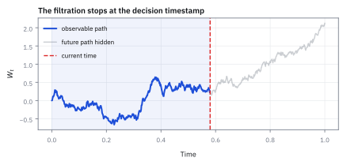
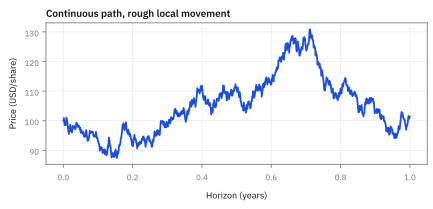
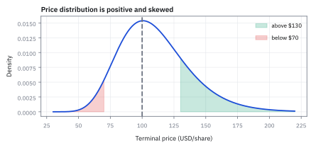
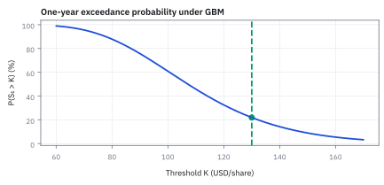

10.3 Three Properties GBM Inherits from Brownian Motion
ราคาแบบ GBM ได้สามสมบัติมาจาก Brownian motion: ตัวคูณของช่วงข้างหน้าไม่สนอดีต ราคาไม่กระโดด และ log ของราคาเป็น Normal ผลคือราคาขึ้น \$30 กับลง \$30 มีโอกาสไม่เท่ากัน
นักวิเคราะห์ (analyst) ของทีมถือหุ้นตัวหนึ่ง และวางแผนขายไว้สองทาง ถ้าราคาขึ้นถึง “ราคาเป้าหมาย” ก็ขายเก็บกำไร ถ้าราคาลงถึง “จุดตัดขาดทุน” (stop-loss) ก็ขายทิ้ง เพื่อไม่ให้ขาดทุนมากไปกว่านั้น เขาตั้งสองจุดนี้ห่างจากราคาวันนี้เท่ากัน
ทีมใช้ GBM เป็นแบบจำลองราคา (นิยามของ GBM) ในแบบจำลองนี้ ราคาโตแบบทบต้นด้วยอัตราเฉลี่ยคงที่ และถูกเขย่าขึ้นลงแบบสุ่มเป็นสัดส่วนกับราคา ของที่รู้ (ตัวเลขสมมติ):
- ราคาวันนี้ $S_0=\$100$
- drift $\mu=10\%$ ต่อปี คืออัตราที่ราคาโตโดยเฉลี่ย
- ความผันผวน $\sigma=25\%$ ต่อปี คือขนาดการขึ้นลงแบบสุ่ม วัดเป็น SD (standard deviation) ของผลตอบแทนหนึ่งปี
- ราคาเป้าหมาย \$130 สูงกว่าวันนี้ $130-100=\$30$
- จุดตัดขาดทุน \$70 ต่ำกว่าวันนี้ $100-70=\$30$
เพื่อนร่วมทีมบอกว่า “ห่างเท่ากัน โอกาสก็น่าจะใกล้กัน” ตอนครบหนึ่งปี โอกาสที่ราคาปิดเหนือ \$130 กับโอกาสที่ราคาปิดใต้ \$70 เป็นเท่าไร?
ลองตอบก่อนเปิดเฉลย
ไม่ใกล้กันเลย หน้านี้จะคำนวณให้ดูทีละขั้นว่า โอกาสปิดเหนือ \$130 คือ 21.93% แต่โอกาสปิดใต้ \$70 มีแค่ 4.44% ต่างกันเกือบห้าเท่า ($21.93/4.44\approx4.9$) เหตุผลมีสองข้อ
- สิ่งที่สุ่มเป็นรูประฆัง Normal คือ log ของราคา ไม่ใช่ตัวราคา บนแกน log ราคาขึ้น 30% กับลง 30% อยู่ห่างจากศูนย์ไม่เท่ากัน: $\ln1.30=+0.262$ แต่ $\ln0.70=-0.357$ ฝั่งลงจึงไกลกว่า
- จุดกลางของ log ของราคาไม่ได้อยู่ที่ศูนย์ มันเลื่อนไปทางขวา (ทางเป้าขึ้น) เท่ากับ log drift $\nu$
หน้านี้จะคำนวณอีกสองเรื่องให้ดู ถ้าเผลอใช้ $\mu=0.10$ เป็นจุดกลาง จะได้โอกาสเหนือ \$130 เป็น 25.80% สูงเกินไป 3.87 จุด และโอกาสที่ราคาจะแตะ \$70 สักครั้งระหว่างปีคือ 10.13% ไม่ใช่ 4.44%
ภาพรวมก่อนลงสูตร
จะตอบคำถามเปิดได้ ต้องดูก่อนว่าราคาแบบ GBM สร้างมาจากอะไร ตัวสุ่มข้างในคือ Brownian motion $W_t$ ซึ่งเป็นเส้นทางสุ่มที่เริ่มที่ 0 แล้วขยับขึ้นลงไปเรื่อย ๆ ราคาคือ $e$ ยกกำลังของมัน
$\nu$ เรียกว่า log drift คือความเร็วเฉลี่ยที่ log ของราคาเคลื่อนขึ้นต่อปี หน้า นิยามของ GBM อธิบายว่าทำไมต้องหัก $\tfrac12\sigma^2$ ออกจาก $\mu$
Brownian motion ถูกนิยามด้วยสามสมบัติ (สามสมบัติของ Brownian motion)
- การขยับในช่วงเวลาที่ไม่ทับกันเป็นอิสระต่อกัน รู้ว่าช่วงหนึ่งขยับเท่าไร ไม่ช่วยเดาอีกช่วงเลย
- เส้นทางต่อเนื่อง ไม่มีรอยขาด
- การขยับในช่วงยาว $t$ เป็น Normal ที่มีค่าเฉลี่ย 0 และ variance เท่ากับ $t$
ราคาได้ $W_t$ มาผ่าน exponential สามสมบัตินี้จึงส่งต่อมาถึงราคา แต่แต่ละข้อเปลี่ยนหน้าตาระหว่างทาง
- การขยับแบบบวกที่อิสระ กลายเป็นตัวคูณที่อิสระ ราคาช่วงข้างหน้าจะถูกคูณด้วยเท่าไร ไม่สนว่าราคาเดินมาอย่างไร
- ความต่อเนื่องยังอยู่ครบ ราคาจึงกระโดดไม่ได้
- ความเป็น Normal ย้ายไปอยู่บน log ของราคา นี่คือเครื่องมือที่ใช้ตอบคำถามเรื่องราคาเป้าหมายและจุดตัดขาดทุน
รูปด้านล่างรวมทั้งสามข้อไว้ในภาพเดียว หน้านี้จะไล่ทีละข้อ แล้วตอบคำถามเปิด ตรวจคำตอบด้วยการแบ่งปีเป็นสองครึ่ง และปิดด้วยความต่างระหว่าง “ปิดใต้ \$70” กับ “เคยแตะ \$70”
รูป — บนแกน log ราคาเดินในกรวยที่บานตามรากที่สองของเวลา
ศัพท์ที่ใช้ในหัวข้อนี้
- Gross return ratio
- $S_{t+s}/S_t$ ราคาตอนท้ายช่วงหารด้วยราคาตอนต้นช่วง คือราคาถูกคูณด้วยเท่าไรในช่วงนั้น เช่นราคาจาก \$100 เป็น \$110 ตัวคูณคือ $110/100=1.10$ ใน GBM ตัวคูณนี้ไม่สนอดีต
- Log return
- $\ln(S_T/S_0)$ คือ log ของตัวคูณ ถ้าราคาขึ้น 10% log return คือ $\ln1.10\approx0.0953$ ใน GBM สิ่งนี้เป็น Normal
- Log drift
- $\nu=\mu-\tfrac12\sigma^2$ ความเร็วเฉลี่ยที่ log ของราคาเคลื่อนขึ้นต่อปี มันคือจุดกลางของรูประฆังบนแกน log ไม่ใช่ $\mu$
- Independent increments
- การขยับในช่วงเวลาที่ไม่ทับกันเป็นอิสระต่อกัน รู้ว่าช่วงหนึ่งขยับเท่าไร ไม่ช่วยเดาอีกช่วงเลย ใน Brownian motion การขยับเป็นการบวก ใน GBM กลายเป็นการคูณ
- Continuous path
- เส้นทางที่ลากได้โดยไม่ยกดินสอ ราคาจึงผ่านทุกระดับระหว่างสองจุดเวลา นี่คือเหตุที่ stop-loss ในแบบจำลองขายได้ที่ราคาที่ตั้งไว้พอดี
- Gap
- ราคากระโดดข้ามช่วงหนึ่งไปเลย โดยไม่มีการซื้อขายระหว่างทาง เช่นข่าวร้ายออกตอนตลาดปิด แล้วเช้าวันรุ่งขึ้นราคาเปิดต่ำกว่าเมื่อวานมาก GBM ไม่ยอมให้เกิด
- Median
- ราคาที่แบ่งผลลัพธ์เป็นสองฝั่งเท่ากัน ราคาตอนครบช่วงมีโอกาส 50% ที่จะสูงกว่านี้ และ 50% ที่จะต่ำกว่า
- Exceedance probability
- $P(S_T\gt K)$ โอกาสที่ราคาตอนครบช่วงสูงกว่าเกณฑ์ $K$ ใช้ตอบเรื่องราคาเป้าหมาย จุดตัดขาดทุน และ payoff ของ option (เงินที่ option จ่ายตอนครบอายุ)
- Stop-loss
- คำสั่งขายอัตโนมัติเมื่อราคาลงมาแตะระดับที่ตั้งไว้ ใช้จำกัดการขาดทุน แต่จะขายได้ที่ระดับนั้นก็ต่อเมื่อราคาเดินผ่านระดับนั้นจริง ไม่กระโดดข้าม
- Reflection principle
- ผลทางคณิตศาสตร์ที่ใช้หาโอกาสที่เส้นทางต่อเนื่องจะแตะระดับหนึ่งระหว่างช่วง ไม่ใช่แค่ตอนจบช่วง ใช้ตอบว่า stop-loss จะถูกชนบ่อยแค่ไหน
สัญลักษณ์และหน่วย
| สัญลักษณ์ | ความหมาย | หน่วย |
|---|---|---|
| $S_t$ | ราคาที่เวลา $t$ ($S_0$ คือราคาวันนี้) | ดอลลาร์ต่อหุ้น |
| $\mu,\ \sigma$ | drift และความผันผวน | ต่อปี |
| $W_t$ | Brownian motion ตัวสุ่มข้างในราคา | — |
| $R_{t,s}$ | ตัวคูณของราคาในช่วงยาว $s$ คือ $S_{t+s}/S_t$ | ไม่มีหน่วย |
| $\Delta S$ | ส่วนต่างราคา $S_{t+s}-S_t$ | ดอลลาร์ต่อหุ้น |
| $s,\ T$ | ความยาวช่วงข้างหน้า และระยะถือ | ปี |
| $\nu$ | log drift $\mu-\sigma^2/2$ | ต่อปี |
| $K$ | ราคาเกณฑ์ เช่นเป้าหรือจุดตัดขาดทุน | ดอลลาร์ต่อหุ้น |
| $d$ | ระยะจากจุดกลางของ log return ถึง $\ln(K/S_0)$ ในหน่วย SD | ไม่มีหน่วย |
| $\Phi$ | CDF ของ standard Normal: $\Phi(z)$ คือโอกาสที่ Normal ซึ่งมีค่าเฉลี่ย 0 และ SD 1 ได้ค่าไม่เกิน $z$ | โอกาส |
| $A,\ B$ | log return ของครึ่งปีแรกและครึ่งปีหลัง | ไม่มีหน่วย |
| $L_T,\ b$ | ราคาต่ำสุดระหว่างช่วง และ $\ln(K/S_0)$ ของเกณฑ์ล่าง | ดอลลาร์ต่อหุ้น, ไม่มีหน่วย |
ขั้นที่ 1 — สมบัติที่ 1: ตัวคูณในอนาคตลืมอดีต
สมบัติแรกของ Brownian motion พูดถึงการขยับแบบบวก แต่ราคาเป็น $e$ ยกกำลัง เราจึงอยากรู้ว่าพอผ่าน exponential แล้ว ความอิสระนี้กลายเป็นอะไร วิธีคือเขียนราคาอีก $s$ ปีข้างหน้า (เวลา $t+s$) ด้วยสูตรของ GBM แยกส่วนที่เป็นราคาตอนเวลา $t$ ออกมา แล้วหารด้วยราคานั้น ผลหารคือตัวคูณของช่วงข้างหน้า และเราจะดูว่ามันขึ้นกับอะไรบ้าง
ดูที่ตัวคูณ $R_{t,s}$ ฝั่งขวาไม่มีราคาเหลืออยู่เลย มีแค่ค่าคงที่ $\nu s$ กับการขยับของ $W$ ที่เกิดหลังเวลา $t$ การขยับนั้นอิสระจากทุกอย่างที่เกิดก่อนเวลา $t$ ตามสมบัติข้อแรกของ Brownian motion และเมื่อเอาตัวแปรอิสระไปใส่ฟังก์ชันอย่าง $e^x$ ผลก็ยังอิสระอยู่ (ความเป็นอิสระ) ตัวคูณของช่วงข้างหน้าจึงไม่สนว่าราคาเดินมาอย่างไร
อีกเรื่องหนึ่ง บรรทัดสุดท้ายบอกว่าการขยับนั้นเป็น Normal ที่ variance เท่ากับ $s$ หน้าตาการสุ่มของ $R_{t,s}$ จึงขึ้นกับความยาวช่วง $s$ อย่างเดียว ไม่ขึ้นกับระดับราคา $S_t$ หุ้น \$20 กับหุ้น \$500 ที่มี $\mu$ และ $\sigma$ เท่ากัน จึงมีตัวคูณที่สุ่มแบบเดียวกันทุกประการ ตัวคูณของสองช่วงที่ไม่ทับกันก็อิสระต่อกันด้วยเหตุผลเดียวกัน
ระวังว่าสิ่งที่อิสระคือตัวคูณ ไม่ใช่ระดับราคา อดีตกำหนดว่าราคาเริ่มจากตรงไหน แต่ไม่กำหนดว่าจะไปทางไหนต่อ ขั้นถัดไปจะแสดงว่าส่วนต่างที่วัดเป็นดอลลาร์ยังจำระดับราคาอยู่
ขั้นที่ 2 — ส่วนต่างเป็นดอลลาร์ยังจำระดับราคา
ทีมบริหารความเสี่ยงวัดความเสี่ยงเป็นดอลลาร์ ไม่ใช่เป็นตัวคูณ คำถามของเขาคือ ถือหุ้นหนึ่งหุ้นไว้ $s$ ปี ราคาจะห่างจากวันนี้กี่ดอลลาร์โดยทั่วไป เขียน $R$ แทน $R_{t,s}$ ให้สั้น ส่วนต่างเป็นดอลลาร์คือ $\Delta S=S_{t+s}-S_t=S_t(R-1)$ เราต้องการ SD ของมัน จึงต้องรู้ค่าเฉลี่ยของ $R$ และของ $R^2$
ทั้งสองตัวหาได้จากเครื่องมือเดียวกัน ให้ $X=\ln R=\nu s+\sigma(W_{t+s}-W_t)$ จากขั้นที่แล้ว $X$ เป็น Normal ที่มีค่าเฉลี่ย $\nu s$ และ variance $\sigma^2s$ ค่าเฉลี่ยของ $e^{uX}$ เรียกว่า MGF (moment generating function) ของ $X$ ที่จุด $u$ เขียนว่า $M_X(u)$ สำหรับ Normal มันคือ $M_X(u)=e^{u\nu s+\frac12u^2\sigma^2s}$ (MGF) เราใช้มันสองครั้ง
- $\mathbb E[R]=\mathbb E[e^{X}]=M_X(1)$ ซึ่งหน้า ราคาคาดหวังในอนาคต หาไว้แล้ว
- $\mathbb E[R^2]=\mathbb E[e^{2X}]=M_X(2)$
ตัวอย่างใช้หุ้นของคำถามเปิด: $\mu=0.10$, $\sigma=0.25$ และ $s=1$ ปี
ใส่ตัวเลข $\mu s=0.10$ และ $\sigma^2s=0.25^2=0.0625$ ของหุ้นสองตัวที่ราคาต่างกัน
ทำไม $\mathbb E[R]$ ออกมาเป็น $e^{\mu s}$ พอดี เพราะ $\nu+\tfrac12\sigma^2=\mu$ ตามนิยามของ $\nu$ แบบเดียวกัน $2\nu+2\sigma^2=2\mu-\sigma^2+2\sigma^2=2\mu+\sigma^2$ ส่วน $\operatorname{Var}_t$ หมายถึง variance เมื่อรู้ราคา $S_t$ แล้ว
จังหวะสำคัญอยู่ที่บรรทัดของ $\operatorname{Var}_t(\Delta S)$ เมื่อรู้ $S_t$ แล้ว $S_t$ เป็นค่าคงที่ จึงดึงออกนอก variance ได้ในรูป $S_t^2$ ส่วน $-1$ ใน $R-1$ เป็นค่าคงที่ที่ไม่เปลี่ยน variance ผลคือ variance ของส่วนต่างโตตาม $S_t^2$ และ SD โตตาม $S_t$ ตัวคูณ $R$ ของสองหุ้นสุ่มแบบเดียวกัน แต่หุ้น \$100 มี SD ของส่วนต่างหนึ่งปี \$28.07 ส่วนหุ้น \$20 มีแค่ \$5.61 เล็กกว่า $100/20=5$ เท่าตามราคา หุ้น \$500 แพงกว่าหุ้น \$20 อยู่ $500/20=25$ เท่า variance จึงมากกว่า $25^2=625$ เท่า
ความผิดที่พบบ่อยคือคิดว่าเมื่อตัวคูณลืมอดีตแล้ว ส่วนต่างเป็นดอลลาร์ก็ลืมด้วย ไม่จริง หุ้นที่ขึ้นจาก \$100 เป็น \$200 จะขยับเป็นดอลลาร์แรงขึ้นสองเท่า ถ้าถือจำนวนหุ้นเท่าเดิม ความเสี่ยงที่วัดเป็นเงินจึงโตตามราคา
รูป — ตัวคูณเหมือนกัน แต่ส่วนต่างเป็นดอลลาร์กว้างต่างกัน

ขั้นที่ 3 — สมบัติที่ 2: ความต่อเนื่องรอดผ่าน exponential
สมบัติที่สองของ Brownian motion คือเส้นทางต่อเนื่อง ฟังดูไม่มีอะไร แต่มันมีผลกับ stop-loss มากที่สุด เราจึงต้องเช็กว่าความต่อเนื่องรอดผ่านสูตรราคามาได้ไหม
“ต่อเนื่องที่เวลา $t$” แปลว่าถ้าขยับเวลาไปนิดเดียว ค่าก็ขยับไปนิดเดียว ให้ $h$ คือระยะเวลาเล็ก ๆ ที่ขยับไป เขียนเป็น limit ได้ว่า เมื่อ $h\to0$ ค่าที่เวลา $t+h$ เข้าใกล้ค่าที่เวลา $t$ เราไล่สูตรราคาจากข้างในออกมา ข้างในสุดคือ $W_t$ ซึ่งต่อเนื่องตามนิยาม ถัดมาคูณด้วย $\sigma$ และบวก $\nu t$ ชั้นนอกสุดใส่ exponential แล้วคูณ $S_0$
การคูณด้วยค่าคงที่และบวกค่าคงที่แค่ยืดกับเลื่อนเส้นทาง จึงไม่ทำให้เส้นขาด จังหวะที่ต้องมีเหตุผลคือการย้าย limit เข้าไปข้างใน exponential ทำได้เพราะ $e^x$ เองเป็นฟังก์ชันต่อเนื่อง ผลคือราคาต่อเนื่อง และราคาผ่านทุกระดับระหว่างสองจุดเวลา ถ้าวันนี้ราคา \$100 และวันหน้า \$65 ระหว่างทางต้องเคยอยู่ที่ \$70 แน่นอน
แต่ต่อเนื่องไม่ได้แปลว่าเรียบ เส้นทางยังหยักจนหาความชันไม่ได้ ดูได้ใน สมบัติแปลก ๆ ของเส้นทาง Brownian
ผลกับการเทรดคือแบบจำลองนี้ไม่ยอมให้ราคากระโดด stop-loss ที่ \$70 ในแบบจำลองจึงขายได้ \$70 พอดีเสมอ เพราะราคาต้องเดินผ่าน \$70 ก่อนจะลงต่ำกว่านั้น ตลาดจริงไม่รับประกันแบบนั้น ถ้าข่าวร้ายออกตอนตลาดปิด ราคาเปิดวันรุ่งขึ้นอาจอยู่ที่ \$55 เลย (ตัวเลขสมมติ)
รูป — เส้นทางต่อเนื่อง แต่ไม่เรียบ

ขั้นที่ 4 — สมบัติที่ 3: ความเป็น Normal ย้ายไปอยู่บน log
สมบัติที่สามบอกว่า $W_T$ เป็น Normal ที่มีค่าเฉลี่ย 0 และ variance $T$ เขียนว่า $W_T\sim\mathcal N(0,T)$ แต่ราคาคือ $e$ ยกกำลังของมัน ราคาจึงไม่ใช่ Normal สิ่งที่ยังเป็น Normal คือ log ของราคา ขั้นนี้ใส่ log ให้สูตรราคาแล้วเขียนเรื่องนี้ให้ชัด เพราะการคำนวณโอกาสทุกตัวต่อจากนี้เริ่มจากผลของขั้นนี้
จุดกลางมาจาก $\nu T$ อย่างเดียว เพราะ $W_T$ มีค่าเฉลี่ยศูนย์ ความกว้างมาจาก $\sigma W_T$ อย่างเดียว เพราะค่าคงที่ไม่สุ่ม variance ของ $\sigma W_T$ คือ $\sigma^2$ คูณ variance ของ $W_T$ ซึ่งเท่ากับ $T$ และการคูณกับบวกค่าคงที่ไม่ทำให้ Normal เลิกเป็น Normal SD จึงเท่ากับ $\sqrt{\sigma^2T}=\sigma\sqrt T$ นี่คือเหตุที่แถบฟ้าในรูปแรกบานตามรากที่สองของเวลา ไม่ใช่เป็นเส้นตรง
บรรทัดสุดท้ายบอกว่าราคาติดลบไม่ได้ เพราะ $e$ ยกกำลังอะไรก็เป็นบวก Normal บนแกน log มีหางซ้ายยาวไม่สิ้นสุด แต่หางนั้นแปลว่าราคาเข้าใกล้ศูนย์ ไม่ใช่ข้ามศูนย์ ราคาจึงเป็น lognormal (ตัวแปรบวกที่ log ของมันเป็น Normal) ซึ่งเบ้ขวา ฝั่งซ้ายถูกบีบเข้าหาศูนย์ ฝั่งขวายืดออกไปได้ไม่จำกัด
ขั้นที่ 5 — แปลงเกณฑ์ราคาเป็นระยะบนแกน Normal
คำถามเปิดถามเรื่องราคา เช่น “ราคาตอนครบปีสูงกว่าเกณฑ์ $K=\$130$ ไหม” แต่ distribution ที่เรารู้อยู่บนแกน log ไม่ได้อยู่บนแกนราคา จึงต้องย้ายคำถามไปไว้บนแกน log ก่อน ใส่ log ทั้งสองข้างของอสมการได้โดยเครื่องหมายไม่พลิก เพราะ log เป็นฟังก์ชันเพิ่ม (ค่าที่ใส่มากขึ้น ผลก็มากขึ้น) และราคาเป็นบวกเสมอ
จากนั้นลบจุดกลาง $\nu T$ และหารด้วย SD $\sigma\sqrt T$ ทั้งสองข้าง ผลคือ standard Normal $Z$ (ค่าเฉลี่ย 0, SD 1) ซึ่งเปิดตาราง $\Phi$ ได้ แบบเดียวกับใน Normal distribution ($\Phi(z)$ คือโอกาสที่ $Z$ ไม่เกิน $z$)
จังหวะที่ต้องระวังคือ ฝั่งขวาของอสมการต้องถูกแปลงด้วยวิธีเดียวกับฝั่งซ้ายทุกขั้น ไม่อย่างนั้นอสมการจะไม่เท่าเดิม ตัวหาร $\sigma\sqrt T$ เป็นบวก เครื่องหมายจึงไม่พลิก พอแปลงเสร็จ คำถามเรื่องราคากลายเป็นคำถามเรื่อง $Z$ ซึ่งอ่านจาก $\Phi$ ได้ทันที บรรทัดสุดท้ายใช้ $P(Z\lt d)=\Phi(d)$ ตรง ๆ
$d$ บอกว่าเกณฑ์ $K$ อยู่ห่างจากจุดกลางกี่ SD บนแกน log มันไม่มีหน่วย เพราะตัวเศษเป็น log ของอัตราส่วนราคา และตัวส่วนเป็น SD ของสิ่งเดียวกัน เครื่องมือนี้จะกลับมาใน สูตร Black–Scholes ซึ่งต้องหาค่าเฉลี่ยของ payoff ของ option ไม่ใช่แค่โอกาส
รูป — สามไม้บรรทัด: ราคา, log ของราคา และระยะในหน่วย SD
ขั้นที่ 6 — ตอบคำถามเปิด: เหนือ \$130 และใต้ \$70
ตอนนี้มีเครื่องมือครบแล้ว ใส่ตัวเลขของคำถามเปิดลงในสูตร $d$ จากขั้นที่แล้ว
โจทย์ให้อะไรมาบ้าง:
- ราคาวันนี้ $S_0=\$100$
- drift $\mu=0.10$ และความผันผวน $\sigma=0.25$ ต่อปี
- ระยะเวลา $T=1$ ปี
- เกณฑ์สองตัว: ราคาเป้าหมาย \$130 และจุดตัดขาดทุน \$70
คำนวณ $\nu$ ก่อน แล้วหา $d$ ของแต่ละเกณฑ์ ตัวส่วนคือ $\sigma\sqrt T=0.25\sqrt1=0.25$ ค่า $\Phi$ อ่านจากตาราง Normal หรือคำนวณด้วยโค้ดท้ายหน้า
คำตอบ: โอกาสปิดเหนือ \$130 คือ 21.93% โอกาสปิดใต้ \$70 คือ 4.44% ที่เหลือคือโอกาสจบระหว่างสองระดับ $1-0.21933-0.04441\approx73.63\%$ สองโอกาสแรกต่างกันเกือบห้าเท่า ด้วยสองเหตุผล บนแกน log จุดตัดขาดทุนอยู่ไกลกว่า (0.357 เทียบกับ 0.262) และจุดกลาง 0.06875 เอียงไปทางเป้าขึ้น
ตรวจเองใน 10 วินาที: median คือราคาที่โอกาสจบสูงกว่ากับต่ำกว่าเท่ากันที่ 50% log ของราคาเป็น Normal ซึ่งสมมาตร median ของมันจึงอยู่ที่จุดกลาง $\nu T$ และ exponential ไม่สลับลำดับมากน้อย median ของราคาจึงเป็น $S_0e^{\nu T}=100e^{0.06875}\approx\$107.12$ \$130 อยู่เหนือ median และ \$70 อยู่ใต้ median สองโอกาสจึงต้องต่ำกว่า 50% ทั้งคู่ อีกข้อหนึ่ง $d_{130}\approx0.77$ อยู่ระหว่าง 0 กับ 1 คำตอบจึงต้องอยู่ระหว่าง $1-\Phi(1)\approx15.9\%$ กับ $1-\Phi(0)=50\%$ ซึ่ง 21.93% ผ่าน
รูป — เป้า \$130 กับ \$70 ห่างจาก \$100 เท่ากัน แต่พื้นที่ไม่เท่ากัน

ขั้นที่ 7 — ซอยปีเป็นสองครึ่งปี คำตอบต้องเท่าเดิม
ถ้าแบบจำลองถูก การมองทีละครึ่งปีต้องได้ distribution ของหนึ่งปีตัวเดิม นี่คือการตรวจคำตอบอีกทางหนึ่ง ราคาตอนครบปีคือราคาที่ถูกคูณสองครั้ง ครั้งแรกด้วยตัวคูณของครึ่งปีแรก ครั้งที่สองด้วยตัวคูณของครึ่งปีหลัง ใส่ log แล้วการคูณกลายเป็นการบวก
ให้ $A$ และ $B$ คือ log ของตัวคูณครึ่งปีแรกและครึ่งปีหลัง ใช้ผลของขั้นที่ 4 กับ $T=0.5$ แต่ละตัวเป็น Normal ที่มีค่าเฉลี่ย $\nu T=0.06875\times0.5=0.034375$ และ variance $\sigma^2T=0.0625\times0.5=0.03125$ สมบัติที่ 1 บอกว่า $A$ กับ $B$ อิสระกัน variance จึงบวกกันได้ตรง ๆ โดยไม่มีพจน์ covariance (ตัววัดว่าสองตัวขยับไปทางเดียวกันแค่ไหน)
แต่ละท่อนยาวครึ่งปี จุดกลางและ variance ของมันจึงเป็นครึ่งหนึ่งของรายปี บวกสองท่อนกลับได้ 0.06875 กับ 0.0625 เท่าเดิม distribution ของหนึ่งปีจึงเป็นตัวเดิม และโอกาส 21.93% ไม่ขึ้นกับว่าเราแบ่งปีเป็นกี่ท่อน
บรรทัดสุดท้ายคือความผิดที่พบบ่อย ถ้าบวก SD ของสองท่อนจะได้ 0.3536 ไม่ใช่ 0.25 และถ้าใช้ตัวเลขนี้ $d$ จะกลายเป็น $(0.262364-0.06875)/0.353553\approx0.54762$ โอกาสเหนือ \$130 กลายเป็น $1-\Phi(0.54762)\approx29.20\%$ สิ่งที่บวกกันได้คือ variance ไม่ใช่ SD และบวกได้ก็ต่อเมื่อสองท่อนอิสระกัน ถ้าไม่อิสระ จะมีพจน์ $2\operatorname{Cov}(A,B)$ ค้างอยู่
รูป — SD ของสองท่อนอิสระรวมกันแบบด้านของสามเหลี่ยมมุมฉาก
ขั้นที่ 8 — คำตอบไวต่อ input แค่ไหน
21.93% ถูกต้องก็ต่อเมื่อพารามิเตอร์ถูก แต่ในงานจริง $\sigma$ เป็นค่าที่ประมาณจากข้อมูลย้อนหลัง และ $\mu$ แทบประมาณไม่ได้เลย (ต้องใช้ข้อมูลหลายสิบปีกว่าจะเห็น drift ชัด ดูตัวเลขใน นิยามของ GBM) ขั้นนี้วัดว่าคำตอบขยับเท่าไร เมื่อ input ผิดไปในสองแบบที่เจอบ่อย
- ผิดแบบที่หนึ่ง: เผลอใช้ $\mu=0.10$ เป็นจุดกลางแทน $\nu=0.06875$ เรียก $d$ ที่ได้ว่า $d_\mu$
- ผิดแบบที่สอง: ความผันผวนจริงคือ $\sigma=0.30$ ไม่ใช่ 0.25 เรียก log drift และ $d$ ที่ได้ว่า $\nu_{30}$ และ $d_{30}$
ใส่ $\mu$ แทน $\nu$ เป็นจุดกลางได้ 25.80% สูงเกินจริง $25.80-21.93=3.87$ จุด เพราะมันให้เครดิตกับ drift ส่วน $\tfrac12\sigma^2=0.03125$ ที่ไม่มีอยู่จริงบนแกน log
เปลี่ยน $\sigma$ จาก 25% เป็น 30% ดันโอกาสขึ้นเป็น 24.47% ทั้งที่ $\mu$ เท่าเดิม และทั้งที่จุดกลางต่ำลงจาก 0.06875 เป็น 0.055 เหตุผลคือความผันผวนที่สูงขึ้นทำให้รูประฆังกว้างขึ้น หางขวาจึงยื่นไปถึง \$130 ได้บ่อยขึ้น
$\sigma$ ผิดไปแค่ $30\%-25\%=5$ จุด คำตอบก็ขยับ $24.47-21.93=2.54$ จุด ทุกครั้งที่รายงานโอกาส จึงต้องบอกพารามิเตอร์ที่ใช้ และบอกด้วยว่าคำตอบขยับได้แค่ไหนเมื่อพารามิเตอร์เปลี่ยน
รูป — โอกาสที่ราคาหนึ่งปีข้างหน้าจะเกินแต่ละระดับ

ขั้นที่ 9 — ปิดใต้ \$70 ไม่เท่ากับเคยแตะ \$70
4.44% ที่เพิ่งได้ตอบว่าราคาตอนครบปีต่ำกว่า \$70 บ่อยแค่ไหน แต่ stop-loss ไม่รอถึงสิ้นปี มันขายทันทีที่ราคาแตะ \$70 วันไหนก็ได้ในปี เส้นทางที่ลงไปแตะ \$70 แล้วฟื้นขึ้นมาจบเหนือ \$70 ก็โดนขายไปแล้วเหมือนกัน เราจึงต้องการโอกาสที่ราคาต่ำสุดตลอดปีจะลงไปถึง \$70 ให้
- $L_T$ คือราคาต่ำสุดตลอดช่วงเวลา $0\le t\le T$ “เคยแตะ $K$” ก็คือ $L_T\le K$
- $b=\ln(K/S_0)$ คือระยะถึงเกณฑ์บนแกน log มันติดลบ ($b\lt0$) เพราะ $K$ ต่ำกว่าราคาวันนี้
สูตรโอกาสแตะของเส้นทางต่อเนื่องมาจาก reflection principle หน้านี้ยกสูตรมาใช้โดยไม่พิสูจน์ แต่จะตรวจว่ามันสมเหตุสมผลหลังคำนวณเสร็จ
พจน์แรกคือโอกาสปิดใต้ \$70 ตัวเดิม 4.44% (ตัวในวงเล็บคือ $d_{70}=-1.70170$ จากขั้นที่ 6) พจน์ที่สอง 5.69% คือเส้นทางที่แตะ \$70 แล้วฟื้นกลับขึ้นไป ขนาดของมันพอ ๆ กับพจน์แรก โอกาสที่ stop-loss ถูกชนในหนึ่งปีจึงราว 10.13% มากกว่าสองเท่าของ 4.44% ($10.13/4.44\approx2.3$)
ตรวจความสมเหตุสมผลได้สองทาง ทางแรก ถ้าเกณฑ์ $K$ ขยับเข้าใกล้ราคาวันนี้ $b$ จะเข้าใกล้ศูนย์ ตัวคูณหน้าพจน์ที่สองเข้าใกล้ $e^0=1$ และสองพจน์รวมกันเข้าใกล้ $\Phi(-\nu\sqrt T/\sigma)+\Phi(\nu\sqrt T/\sigma)=1$ (เพราะ $\Phi(-x)+\Phi(x)=1$) แปลว่าเกณฑ์ที่อยู่ติดราคาวันนี้ต้องถูกแตะแน่นอน ซึ่งสมเหตุสมผล เพราะเส้นทางหยักขึ้นลงทันทีที่เริ่ม
ทางที่สอง ถ้า $\nu=0$ ตัวคูณหน้าพจน์ที่สองเป็น 1 และสองพจน์เท่ากัน ได้ $2\Phi(b/(\sigma\sqrt T))$ นี่คือรูปคลาสสิกของ reflection principle ทุกเส้นทางที่แตะเกณฑ์แล้วจบใต้เกณฑ์ มีเส้นคู่ที่สะท้อนกลับขึ้นไปจบเหนือเกณฑ์พอดี โอกาสแตะจึงเป็นสองเท่าของโอกาสจบใต้เกณฑ์
รูป — สามเส้นทาง: ปิดใต้ แตะแล้วฟื้น และไม่เคยแตะ
ความผิดที่ให้โอกาสผิดโดยไม่มีใครสังเกต
ใช้ $\mu$ เป็นจุดกลางใน $d$: จุดกลางบนแกน log คือ $\nu T$ ไม่ใช่ $\mu T$ ใช้ผิดตัวแล้วโอกาสเหนือ \$130 ออกมาสูงเกินไป ค่าที่ผิด $d_\mu$ ใช้ $\mu=0.10$ ค่าที่ถูก $d$ ใช้ $\nu=0.06875$
25.80% ดูสมเหตุสมผล จึงไม่มีใครสงสัย และตรวจหน่วยก็จับไม่ได้ เพราะ $\mu$ กับ $\nu$ เป็นอัตราต่อปีทั้งคู่
ตั้งเป้าและจุดตัดขาดทุนห่างเท่ากันเป็นเงิน แล้วคิดว่าโอกาสเท่ากัน: ระยะ \$30 เท่ากัน แต่โอกาสคือ 21.93% กับ 4.44% ต่างกัน $21.93/4.44\approx4.9$ เท่า การเทียบกำไรที่หวังกับความเสี่ยงต้องใช้โอกาสที่คำนวณได้ ไม่ใช่ระยะเป็นเงิน
เชื่อว่า stop-loss ขายได้ราคาที่ตั้ง: สมมติว่าถือ 50,000 หุ้นที่ซื้อมา \$100 และตั้ง stop-loss ที่ \$70 วันหนึ่งราคาปิดที่ \$72 คืนนั้นมีข่าวร้ายออกตอนตลาดปิด เช้าวันรุ่งขึ้นราคาเปิดที่ \$55 เลย ราคาไม่เคยอยู่ที่ \$70 stop-loss จึงขายได้ที่ \$55 ให้ $\text{loss}_{\text{plan}}$ คือขาดทุนตามแผน และ $\text{loss}_{\text{gap}}$ คือขาดทุนจริงเมื่อราคากระโดด
ขาดทุนจริง \$2.25 ล้าน เกินแผน \$1.5 ล้าน ไปอีก \$750,000 แบบจำลอง GBM ไม่มีวันให้คำตอบนี้ เพราะสมบัติที่ 2 ห้ามราคากระโดด
ใช้โอกาสปิดใต้แทนโอกาสแตะ: 4.44% (ปิดใต้ \$70) กับ 10.13% (เคยแตะ \$70) ตอบคนละคำถาม ถ้าใช้ตัวเลขแรกประเมินว่า stop-loss จะถูกชนบ่อยแค่ไหน จะประเมินต่ำไป $1-4.44/10.13\approx56\%$ คือเกินครึ่ง
บวก SD ข้ามช่วงเวลา: SD หนึ่งปีจากสองครึ่งปีคือ $\sqrt{0.03125+0.03125}=0.25$ ไม่ใช่ $0.177+0.177=0.354$ ความผิดนี้ทำให้โอกาสเหนือ \$130 พองจาก 21.93% เป็น 29.20%
ใช้ทำอะไรบนโต๊ะจริง
สูตร $1-\Phi(d)$ ตอบคำถามที่ลูกค้าถามบ่อยที่สุด: โอกาสที่หุ้นจะถึงราคาเป้าหมายในหนึ่งปีเป็นเท่าไร บทวิจัยที่ตั้งเป้า \$130 กำลังพูดถึงเหตุการณ์ที่แบบจำลองนี้ให้โอกาสแค่ 21.93% ไม่ใช่สิ่งที่ “น่าจะเกิด” ทีมบริหารความเสี่ยงก็ใช้สูตรเดียวกันตั้งเกณฑ์เตือน เช่นหาระดับราคาที่โอกาสปิดต่ำกว่านั้นไม่เกิน 5%
สูตรเดียวกันนี้อยู่ใน สูตร Black–Scholes ซึ่งใช้ตั้งราคา call option (สิทธิซื้อหุ้นในอนาคตที่ราคาตกลงไว้ เรียกว่า strike) พจน์ $N(d_2)$ ในสูตรนั้นคือ $1-\Phi(d)$ ตัวเดียวกับหน้านี้ เพียงแทน $\mu$ ด้วยอัตราดอกเบี้ย มันคือโอกาสที่หุ้นจะจบเหนือ strike ภายใต้ risk-neutral measure (โลกสมมติที่ใช้ตั้งราคา ซึ่งหุ้นโตเฉลี่ยเท่าอัตราดอกเบี้ย)
ส่วนสมบัติที่ 2 บอกว่าเราต้องเติมอะไรเอง ตัวเลขทุกตัวในหน้านี้ไม่รวม gap จากข่าว เงินปันผล และต้นทุนการซื้อขาย ก่อนอนุมัติวงเงิน (เพดานเงินที่ให้เทรด) จึงต้องทำ gap stress แยกต่างหาก คือสมมติว่าราคากระโดดแล้วดูว่าขาดทุนเท่าไร และทุกครั้งที่รายงานโอกาส ต้องติดป้ายว่าเป็นช่วงหนึ่งปี ที่ $\mu=10\%$ และ $\sigma=25\%$ ภายใต้ GBM ที่ไม่มีการกระโดด
โจทย์ตรวจความเข้าใจ
1. หุ้นสมมติอีกตัวหนึ่ง ราคาวันนี้ \$50 มี drift $\mu=8\%$ และความผันผวน $\sigma=35\%$ ต่อปี นักวิเคราะห์ตั้งราคาเป้าหมาย \$60 และจุดตัดขาดทุน \$40 ห่างจาก \$50 ข้างละ \$10 เท่ากัน อีกหกเดือนข้างหน้า ($T=0.5$ ปี) โอกาสที่ราคาปิดเหนือ \$60 และโอกาสที่ราคาปิดใต้ \$40 เป็นเท่าไร?
เฉลย
หาจุดกลาง $\nu T$ และ SD $\sigma\sqrt T$ ของ log ของราคาก่อน
จากนั้นหา $d$ ของแต่ละเกณฑ์ ด้วย $\ln(60/50)=\ln1.2$ และ $\ln(40/50)=\ln0.8$
ห่าง \$10 เท่ากัน แต่โอกาสต่างกัน $24.23-17.37=6.86$ จุด
2. กลับมาที่หุ้นของคำถามเปิด ($S_0=\$100$, $\mu=10\%$, $\sigma=25\%$) ถ้าย้ายจุดตัดขาดทุนไปที่ $100/1.3\approx\$76.92$ จุดนี้สมมาตรกับ \$130 บนแกน log คือราคาลดลงด้วยการหาร 1.3 เท่ากับที่เป้าขึ้นด้วยการคูณ 1.3 โอกาสปิดใต้เกณฑ์นี้ในหนึ่งปีเป็นเท่าไร?
เฉลย
ระยะบนแกน log เท่ากันแล้ว แต่ 9.27% ยังไม่ถึงครึ่งหนึ่งของ 21.93% ฝั่งขึ้น ($21.93/2\approx10.97$) ความต่างที่เหลือมาจาก log drift 0.06875 ที่ดันจุดกลางไปทางขวา
3. นักวิเคราะห์อยากรู้ว่าเป้าที่ “ไกลมาก” อยู่ตรงไหน ราคา $K$ เท่าไรที่หุ้นของคำถามเปิดมีโอกาสปิดเหนือเพียง 10% ในหนึ่งปี?
เฉลย
ต้องการ $1-\Phi(d)=0.10$ คือ $\Phi(d)=0.90$ ค่า $z$ ที่ $\Phi(z)=0.90$ อ่านจากตาราง Normal ได้ $z_{0.90}\approx1.281552$ แล้วย้อนสูตร $d=(\ln(K/100)-\nu)/\sigma$ หา $K$
คำนวณซ้ำด้วย JavaScript
โค้ดนี้รันใน Node.js ได้เลยโดยไม่ต้องติดตั้งแพ็กเกจ มันคำนวณตัวเลขทุกตัวของหน้านี้ซ้ำ ได้แก่ โอกาสจากสูตร $d$, SD เป็นดอลลาร์จาก $M_X(1)$ กับ $M_X(2)$ และโอกาสแตะจาก reflection principle แล้วพิมพ์ผลออกมาเป็น JSON
เปิดดูโค้ด
// Standard Normal CDF: Taylor series near the centre, continued fraction in the tails.
function normCdf(x) {
const ax = Math.abs(x), density = Math.exp(-ax * ax / 2) / Math.sqrt(2 * Math.PI);
if (ax < 3) {
let term = ax, sum = ax;
for (let k = 1; term > 1e-17 * sum; k++) { term *= ax * ax / (2 * k + 1); sum += term; }
return x < 0 ? 0.5 - density * sum : 0.5 + density * sum;
}
let f = 0;
for (let k = 300; k >= 1; k--) f = k / (ax + f);
const tail = density / (ax + f);
return x < 0 ? tail : 1 - tail;
}
function normInv(p) {
let lo = -40, hi = 40;
for (let i = 0; i < 200; i++) { const mid = (lo + hi) / 2; if (normCdf(mid) < p) lo = mid; else hi = mid; }
return (lo + hi) / 2;
}
// ln(S_T / S_0) ~ N(m, sd^2) with m = (mu - sigma^2/2) T and sd = sigma sqrt(T).
function logLaw(mu, sigma, T) {
if (!(sigma > 0 && T > 0)) throw new RangeError('Volatility and horizon must be positive');
return {m: (mu - sigma * sigma / 2) * T, sd: sigma * Math.sqrt(T)};
}
// d = standardized distance from the centre of the log law to ln(K / S0).
function threshold(S0, K, mu, sigma, T) {
if (!(S0 > 0 && K > 0)) throw new RangeError('Prices must be positive');
const {m, sd} = logLaw(mu, sigma, T);
return (Math.log(K / S0) - m) / sd;
}
const probAbove = (S0, K, mu, sigma, T) => 1 - normCdf(threshold(S0, K, mu, sigma, T));
const probBelow = (S0, K, mu, sigma, T) => normCdf(threshold(S0, K, mu, sigma, T));
// SD of the dollar change given S, from E[R] = M_X(1) and E[R^2] = M_X(2).
function dollarChangeSD(S, mu, sigma, s) {
const {m, sd} = logLaw(mu, sigma, s), v = sd * sd;
return S * Math.sqrt(Math.exp(2 * m + 2 * v) - Math.exp(2 * m + v));
}
// Chance that a continuous path touches K below S0 before T (reflection principle).
function probTouchBelow(S0, K, mu, sigma, T) {
if (!(K < S0)) throw new RangeError('Barrier must be below the start price');
const {m, sd} = logLaw(mu, sigma, T), b = Math.log(K / S0), nu = m / T;
return normCdf((b - m) / sd) + Math.exp(2 * nu * b / (sigma * sigma)) * normCdf((b + m) / sd);
}
const law = logLaw(0.10, 0.25, 1), half = logLaw(0.10, 0.25, 0.5);
console.log(JSON.stringify({
law, d: [threshold(100, 130, 0.10, 0.25, 1), threshold(100, 70, 0.10, 0.25, 1)],
up: probAbove(100, 130, 0.10, 0.25, 1), down: probBelow(100, 70, 0.10, 0.25, 1),
median: 100 * Math.exp(law.m), above100: probAbove(100, 100, 0.10, 0.25, 1),
dollarSD: [dollarChangeSD(100, 0.10, 0.25, 1), dollarChangeSD(20, 0.10, 0.25, 1)],
halves: {sd: Math.sqrt(2 * half.sd ** 2), wrongSD: 2 * half.sd,
upWithWrongSD: 1 - normCdf((Math.log(1.3) - law.m) / (2 * half.sd))},
wrongMu: 1 - normCdf((Math.log(1.3) - 0.10) / 0.25),
sigma30: probAbove(100, 130, 0.10, 0.30, 1),
touch70: probTouchBelow(100, 70, 0.10, 0.25, 1),
exercises: {
halfYear: [probAbove(50, 60, 0.08, 0.35, 0.5), probBelow(50, 40, 0.08, 0.35, 0.5)],
logSymmetric: probBelow(100, 100 / 1.3, 0.10, 0.25, 1),
target10: 100 * Math.exp(law.m + normInv(0.90) * law.sd)
}
}));สิ่งที่ควรตอบได้หลังอ่าน
- ตัวคูณ $S_{t+s}/S_t$ ไม่สนอดีตและไม่ขึ้นกับระดับราคา แต่ส่วนต่างเป็นดอลลาร์มี SD เป็นสัดส่วนกับ $S_t$: \$28.07 ที่ราคา \$100 และ \$5.61 ที่ราคา \$20
- เส้นทางต่อเนื่อง ราคาจึงกระโดดไม่ได้ นี่คือข้อที่ต่างจากตลาดจริงมากที่สุดเมื่อพูดถึง stop-loss และ hedge
- log ของราคาเป็น Normal ราคาเป็น lognormal และ $P(S_T\gt K)=1-\Phi\big((\ln(K/S_0)-\nu T)/(\sigma\sqrt T)\big)$ โดยจุดกลางคือ $\nu T$ ไม่ใช่ $\mu T$
- ราคาเป้าหมาย \$130 กับจุดตัดขาดทุน \$70 ห่างจาก \$100 เท่ากัน แต่มีโอกาส 21.93% กับ 4.44% และโอกาสที่ราคาจะแตะ \$70 สักครั้งระหว่างปีคือ 10.13%
- ช่วงเวลาที่อิสระกัน variance บวกกันได้ แต่ SD บวกกันไม่ได้
หน้าถัดไป ทำไม GBM จึงเป็นแบบจำลองราคาหุ้นที่สมเหตุสมผล จะชั่งน้ำหนักอย่างตรงไปตรงมาว่าสมมติฐานทั้งหมดนี้ใช้กับหุ้นได้แค่ไหน ด้วยตัวเลขจากทั้งแบบจำลองและข้อมูลจริง